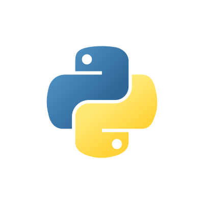

Saudação
Olá, bem-vindo ao meu curso de Python. Neste curso, eu e você aprenderemos os fundamentos da linguagem Python!

Olá, bem-vindo ao meu curso de Python. Neste curso, eu e você aprenderemos os fundamentos da linguagem Python!

Python é uma linguagem de programação de alto nível, interpretada, de script e de propósito geral, conhecida por sua sintaxe simples e legível, que é amplamente utilizada em diversos campos, como desenvolvimento web, ciência de dados, inteligência artificial e automação.